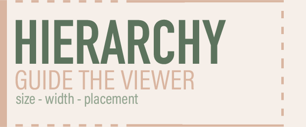

Typography
Hierarchy
Hierarchy helps guide the viewer through a design and shows them what information is most important. Changes in size, weight, and placement can help create a clear order for the viewer to follow.

Original artwork created in Adobe Illustrator.
Font Pairing
Font pairing helps create a consistent look and feel throughout a design. Choosing fonts that work well together can add personality while still keeping the information clear and easy to read.
Good typography should guide the viewer without getting in the way.
Color and Design
Contrast
Contrast helps important parts of a design stand out. Differences in color, size, and type can draw attention to certain information and make a design easier to understand.
Negative Space
Negative space gives a design room to breathe and keeps the page from feeling overcrowded. Leaving open space around text and images can help create balance and make the content easier to focus on.